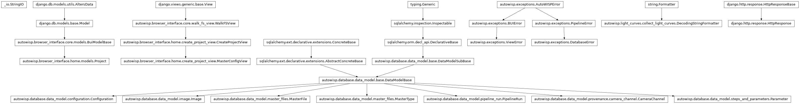

autowisp.browser_interface.home.views module
Class Inheritance Diagram

Define the vies available on the home page.
- autowisp.browser_interface.home.views._pattern_to_glob(pattern, known_values, project_home)[source]
Convert a filename pattern to glob by substituting unknown keys with
*.Known keys are replaced with their values from known_values; all remaining
{key}or{key:spec}placeholders are replaced with*.- Parameters:
- Returns:
A glob pattern suitable for
glob.iglob().- Return type:
- autowisp.browser_interface.home.views._safe_remove(fpath, project_home)[source]
Delete fpath after verifying it resides under project_home.
- autowisp.browser_interface.home.views.confirm_delete_projects(request)[source]
Show a confirmation page listing projects and file-type checkboxes.
- autowisp.browser_interface.home.views.delete_image_products(project_home, data_reductions=True, calibrated_images=True)[source]
Delete data reduction files and/or calibrated images for a project.
Reads the
data-reduction-fnameand/orcalibrated-fnameconfiguration parameters from the project database, then iterates over everyImage, reads its FITS header to resolve the templates, and removes the corresponding files.
- autowisp.browser_interface.home.views.delete_lightcurves(project_home)[source]
Delete all lightcurve files generated by the project at project_home.
Uses the lightcurve catalog(s) stored as
MasterFileentries of typelightcurve_catalogto identify which individual lightcurve files were created, then removes them together with the catalog files themselves.The
lc-fnameconfiguration parameter is read from the project database to determine the filename pattern used when the lightcurves were created.- Parameters:
project_home (str) – Absolute path to the project home directory.
- autowisp.browser_interface.home.views.delete_logs(project_home)[source]
Delete all log and stdout/stderr output files for a project.
Reads the
logging-fnameandstd-out-err-fnameconfiguration parameters from the project database, converts the patterns to globs by substituting unknown placeholders with*, and removes all matching files.- Parameters:
project_home (str) – Absolute path to the project home directory.
- autowisp.browser_interface.home.views.delete_master_files(project_home)[source]
Delete all master files generated by the project at project_home.
Queries the
master_filetable for every entry and removes the corresponding file from disk.- Parameters:
project_home (str) – Absolute path to the project home directory.
- autowisp.browser_interface.home.views.delete_projects(request)[source]
Delete selected projects and optionally their generated files.
- autowisp.browser_interface.home.views.export_master_config(request)[source]
Generate a JSON file with the current master config for new project.
- autowisp.browser_interface.home.views.find_missing_databases()[source]
Return projects whose database is not accessible.
A project’s database is considered present when either its SQLite file (
autowisp.db) or its centralised-DB connection file (autowisp_db.url) exists under the project home directory.
- autowisp.browser_interface.home.views.prune_empty_directories(project_home)[source]
Remove all empty directories under project_home.
Walks the directory tree bottom-up so that a parent directory is checked only after its children have already been removed if they were empty. The project_home directory itself is never removed.
- Parameters:
project_home (str) – Absolute path to the project home directory.